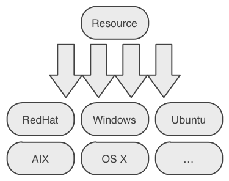
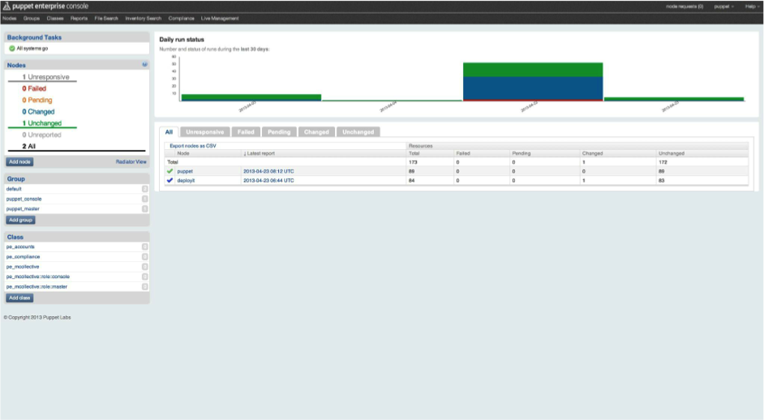
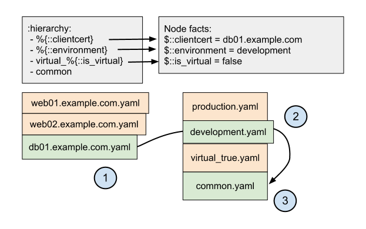

Introduction to
Puppet
What is Puppet?
#Configuration Management
Standalone
vs.
Master / Agent
DSL
Domain Specific Language
Language Basics
Types => Providers
Core Types
- file
- service
- package
- user
- group
- cron
- and many many more....
Basic Resource Syntax
resource_type { 'title':
ensure => present,
attribute_1 => 'value',
attribute_2 => ['more', 'values'],
}
Manifests
site.pp
notify { 'Greeting':
message => 'Puppet says hi!',
}
will result in
Running Puppet with standalone.pp...
notice: Puppet says hi!
notice: /Stage[main]//Node[default]/Notify[Greeting]/message:
defined 'message' as 'Puppet says hi!'
notice: Finished catalog run in 0.05 seconds
Exercise: Using Vagrant
$ git clone https://github.com/xebia/puppet-introduction.git
$ vagrant up
$ vagrant provision
Will run puppet apply site.pp on VirtualBox image
$ vagrant ssh
Puppet CLI
$ puppet help
Usage: puppet [options] [options]
Available subcommands:
apply Apply Puppet manifests locally
describe Display help about resource types
man Display Puppet manual pages
resource The resource abstraction layer shell
... and many more ....
See 'puppet help <subcommand>' for help on a specific subcommand.
Exercise: Puppet CLI
$ vagrant ssh
$ sudo su -
$ puppet describe user
$ puppet resources user root
Exercise: Create user
user { 'username':
ensure => present,
uid => '1337',
managehome => true,
}
Exercise:
Create a static file
manifests/site.pp
file { 'static':
ensure => present,
path => '/tmp/static.txt',
content => 'Puppet FTW',
} Facts
Hostname? IP address?
Enter facter
Extracts information from system ...
... and passes them as variables to puppet
Exercise:
List available facts
$ vagrant ssh
$ sudo su -
$ facter
Exercise: File with dynamic content
file { 'dynamic':
ensure => present,
path => '/tmp/dynamic.txt',
content => "${hostname} ${ipaddress}",
}
Installing packages
>30 providers: yum, rpm, apt, msi, apple, ...
Puppet will guess provider based on OS, but you can override
package { 'my-package':
ensure => present,
provider => 'yum',
}
Exercise: Install Apache HTTPD
package { 'httpd':
ensure => present,
}
Running Services
Most platforms can run services
Specify parameters for
- start
- stop
- restart
- status
- start at boot (enable)
Exercise: Start Apache and stop IPtables
service { 'httpd':
ensure => running,
enable => true,
}
service { 'iptables':
ensure => stopped,
}
Resource Referencens
Point to existing Puppet resource
file { 'static':
ensure => present,
path => '/tmp/static.txt',
content => 'Puppet FTW',
} corresponding reference
File['static']
Multi reference
Specify a comma separated list as title
service { 'httpd':
ensure => running,
subscribe => File['vhost1', 'vhost2', 'vhost3'],
} Setting defaults
Reference syntax can be used to set defaults
Combine resource reference with attribute block
File['static'] {
owner => 'someuser',
group => 'somegroup',
mode => '0600',
} This even work for all files
File {
mode => '0666',
} Ordering
Puppet DSL is declarative
You specify the end state of a machine ...
... and (by default) Puppet will execute at a consistent but unpredictable order
Ordering
notify { 'First': }
notify { 'Second': }
... results in ...
Running Puppet with site.pp...
notice: Second
notice: /Stage[main]//Node[default]/Notify[Second]/message:
defined 'message' as 'Second'
notice: First
notice: /Stage[main]//Node[default]/Notify[First]/message:
defined 'message' as 'First'
Ordering
notify { 'First': }
notify { 'Second':
require => Notify['First']
}
shorthand:
notify{ 'First': } -> notify {'Second': }
Ordering
Four relationships
-
require (
->) -
before (
<-) -
notify (
~>) -
subscribe (
<~)
Ordering options in Puppet 3.2+
Ordering has been made configurable
ordering parameter in puppet.conf:
title-hash(default, like pre 3.2)manifestrandom
http://puppetlabs.com/blog/introducing-manifest-ordered-resources
Exercise: Ordering
Given apache.pp
package { 'httpd':
ensure => latest
}
file { '/etc/httpd/conf.d/default.conf':
content => template('apache/default.conf.erb'),
owner => 'httpd',
group => 'httpd'
}
service { 'httpd':
ensure => running
}
service { 'iptables':
ensure => stopped
}
Exercise: Ordering
Add some ordering to the apache.pp
- the package should be installed first
- followed by the config file
- make sure that any modfications to both config file and package trigger a service restart of the httpd
- make sure iptables is stopped last
Exercise: Ordering
package { 'httpd':
ensure => latest
before => File['/etc/httpd/conf.d/default.conf'],
notify => Service['httpd']
}
file { '/etc/httpd/conf.d/default.conf':
content => template('apache/default.conf.erb'),
owner => 'httpd',
group => 'httpd',
}
service { 'httpd':
ensure => running,
subscribe => [File['/etc/httpd/conf.d/default.conf'],Package['httpd']],
before => Service['iptables']
}
service { 'iptables':
ensure => stopped
}
Exercise: Ordering
extra credit, specify ordering separate from resources
Package['httpd']
-> File['/etc/httpd/conf.d/default.conf']
~> Service['httpd']
-> Service['iptables']
package { 'httpd':
ensure => latest
}
file { '/etc/httpd/conf.d/default.conf':
content => template('apache/default.conf.erb'),
owner => 'httpd',
group => 'httpd',
}
service { 'httpd':
ensure => running,
before => Service['iptables']
}
service { 'iptables':
ensure => stopped
}
Common Pattern:
Package / File / Service
Package['httpd'] -> File['example.com.conf'] ~> Service['httpd']
package { 'httpd':
ensure => present,
}
file { 'example.com.conf':
path => '/etc/httpd/conf.d/example.com.conf',
content => '<VirtualHost *:80>
DocumentRoot /var/www/example.com
ServerName example.com
</VirtualHost>',
}
service { 'httpd':
ensure => running,
enable => true,
}
Variables
Like facts, but then self-defined
Strings, arrays and hashes...
Strings
simple value reference
# defining strings
$var1 = "kitten"
$var2 = "small"
# using strings
package{ $var1:
ensure => present,
name => $var1,
}
# stringing strings together
notify{ "${var2}${var1}": }
Arrays
unstructured list of values
# defining an array
$packagesArray = ['httpd', 'unzip', 'tomcat']
# appending to an array
$packagesArray += ['ruby']
# using the array
package{ $packagesArray:
ensure => present,
}
# and again
file { '/some/file':
require => Package[$packagesArray]
}
Hashes
datastructure of key value pairs
# defining a hash
$hash1 = { key1 => 'val1', key2 => 'val2' }
# nesting hashes in hashes in hashes in ...
$hash2 = { key1 => 'value1',
key2 => {key2_1 => 'val2_1'}
key3 => {key3_1 => 'val3_1',
key3_2 => 'val3_2'}
}
# accessing the hash
notice( $hash1[key1] )
# accessing a hash in a hash
notice( $hash2[key3][key3_2] )
Variable Scoping
$test = 'top'
class myclass {
# dynamic lookup of ${test}, deprecated since 2.7
exec { "/bin/echo ${test}": logoutput => true }
}
class other {
$test = 'other'
include myclass
}
include other
Qualified variables
classname::variable
class myclass {
# set a variable
$myVar = "test1"
exec {"/bin/echo ${myvar}": logoutput => true }
}
class yourclass {
require myclass
# access the variable from myclass
$yourVar = $myclass::myVar
}
Variable Limitations
A variable can only be set once per scope. And cannot be overwritten, only added to.
# set it once
$string = "foo"
# then this will result in an error
$string = "foobar"
# adding strings
$string += "bar"
Variable Limitations
Parse-order dependent
Variables have te be declared before use
$filename = '/tmp/my-file'
file { $filename:
content => $content,
}
$content = 'This will not work'
Conditional expresions
- if statements
- case statements
- selectors
if .. elseif .. else
if $osfamily == "RedHat" {
package{ 'httpd':
ensure => present,
}
}
elseif $operatingsystem == "Ubuntu" {
package{ 'apache2':
ensure => present,
}
}
else {
fail('Unsupported OS')
}
Conditions
# value
if $string == "value" {}
# functions
if defined(Package['apache']) {}
# regexp
if $operatingsystem =~ /(Debian|Ubuntu)$/ {}
# with and/or
if $string == "value"
and defined(Package['apache'])
or $somestring =~ /someregexp/ {}
Case
# $operatingsystem is provided by facter
case $operatingsystem {
#single value
'Solaris' : { package{'apache': ensure => present}}
#multiple values
'redhat', 'centos' : { package{'apache2': ensure => present}}
# ruby regexp
/^(Debian|Ubuntu)$/ : { package{'httpd': ensure => present}}
# default value
default : { fail('Unsupported OS') }
}
selectors
# simple selector statement
$webserverPackage = $osfamily ? {
'RedHat' => 'httpd',
'Debian' => 'apache',
default => 'httpd',
}
# and an inline version
file{ 'logfile':
path => $operatingsystem ? {
'Redhat' => "/var/tmp/log.txt",
/(Darwin|FreeBSD)/ => "/var/log/log.txt",
default => "/var/adm/log.txt",
},
ensure => present
}
Functions
Pieces of code that run during compilation
Function syntax
For instance ...
file {'/etc/ntp.conf':
ensure => file,
content => template('ntp/ntp.conf'),
}
include apache2
if str2bool($is_virtual) {
include ntp::disabled
}
else {
include ntp
}
Functions types
- Statements
- Rvalue
Statement Functions
Do not return a value
# send stuff to logging stream ...
notice("everything went ok")
warn("we want to warn you")
err("there is an error sir")
debug("at one time you thought this message was a good idea")
# or fail alltogether
fail("something went horribly wrong... Have a nice day!!!")
# and yess this wil cause the puppet run to actually fail
Rvalue Functions
Functions that Return a value
# get a value from Hiera
$val = hiera("someValueName")
# split a string into an array
$array = split($val, ':')
More on functions
A complete list of default functions can be found at
http://docs.puppetlabs.com/references/latest/function.html
And you can always write your own ;-)
Exercise: Multi-OS support
create a fragment of puppet code that installs httpd when on RHEL based systems, apache2 on Debian based systems and fails on other OS-es
- use facter
- use at least one variable
- use some conditional expression
- use fail function
Exercise: Multi-OS support
case $osfamily {
'Debian' : { $package_name = 'apache2'}
'Redhat' : { $package_name = 'httpd' }
default : { fail("This class will self destruct in 5 seconds") }
}
package { $package_name:
ensure => latest
}
Classes
A collection of resources that can be called or included as a whole.
Classes can be defined and must be declared to activate/instantiate them
Defining a class
Use class keyword
# defining class
class someclass {
# Specify resources here
Package['foo'] -> File['bar'] ~> Service['baz']
package { 'foo': }
file { 'bar': }
service { 'baz': }
}
Declaring a class
Use like any other type, or use include keyword
# declaring (activating) class
class { 'someclass':
param => 'value',
}
# ... or ...
include someclass
Exercise: Apache HTTPD class
Create a puppet class that ensures that apache is installed and the service is started
class apache {
package { 'httpd':
ensure => latest,
notify => Service['httpd'],
}
service { 'httpd':
ensure => running,
after => Package['httpd'],
}
}
Parameterized classes
A collection of resources that can change it's behaviour according to parameters specified during its invocation call
creating a parameterized class
# defining class
class java (
$role,
$version) {
case $role {
'server': { package{"java-${version}-jdk": ensure => latest }
'client': { package{"java-${version}-jre": ensure => latest }
default : { fail('Unsupported role') }
}
}
calling a parameterized class
class{ 'java':
version => '1.7.0',
role => 'client',
}
Exercise: Defaults
Now make the result of the previous excersise parameterized
Add a parameter to specify whether apache should run
class apache (
$service_state
) {
package { 'httpd':
ensure => latest,
notify => Service['httpd']
}
service { 'httpd':
ensure => $service_state,
after => Package['httpd']
}
}
Default values
Can have default values
$parameter = "default value"
The value can be overridden, if not the default is used
class java (
$role = 'server',
$version = '1.6.0' ) {
...
}
class{ 'java':
version => "1.7.0",
}
Exercise: Defaults
Iterate on the previous exercise and give the class parameter a default value
class apache (
$service_state => 'running'
) {
package { 'httpd':
ensure => latest,
notify => Service['httpd']
}
service { 'httpd':
ensure => $service_state,
after => Package['httpd']
}
}
Exercise: Invalid parameter
Finaly make sure that the class fails if it gets passed invalid values
class apache (
$service_state => 'running'
) {
case $service_state {
'running', 'stopped', 'enabled', 'disables': {}
default : { fail( "incorrect value: ${service_state}" ) }
}
package { 'httpd': ... }
service { 'httpd': ... }
}
Defined Types
What?
A way to group basic resources into one super-resource!
And can be used as any other resource
Why?
Isn't this what classes are for?
Classes can only be called/included once
#first call will succeed
class{ 'java': version => '1.7.0' }
#the second will throw a duplicate resource error
class{ 'java': role => 'server' }
Defined Types
define tomcat::instance (
$basedir = "/opt/instance/${name}",
$source_dir = "/opt/tomcat",
$port = "9081" ) {
file {"${basedir}/tomcat.conf":
source => "puppet:///modules/tomcat/config.file"
}
}
Calling it!
tomcat::instance{"test1": }
tomcat::instance{"test2": }
Restrictions
- Can't be included: it needs a name
- Name must be unique
Exercise: Create vhost defined type
define apache::vhost (
$port = '80',
$docroot = '/var/www/html',
$servername = $title) {
...
}
Modules
Classes are not really portable
Modules = bundles of classes, libs, files, etc
Puppet autoloads modules, ready to include
Modules
Basisc module structure
my_module
manifests/
init.pp – Entry point for module; Mandatory!
foo.pp – Second class
impl/
bar.pp – Third class
files/ – Contains static files
lib/ – Contains custom facts, resource types, etc
templates/ – Contains dynamic templates
tests/ – Contains examples
my_module/manifests/
manifests/init.pp
– Entry point for module
– Must contain:
class my_module{...}
manifests/foo.pp
–
class my_module::foo { ... }
manifests/impl/bar.pp
–
class my_module::impl::bar { ... }
my_module/files/
Static files: config files, installation binaries, etc
Reference them from manifests
file { '/etc/my_module/static.conf':
source => 'puppet:///modules/my_module/static.conf'
}
my_module/templates/
Dynamically generated files, using variables & facts
Evaluate using
template()
function
file { '/etc/my_module/dynamic.conf':
content => template("my_module/dynamic.conf.erb")
}
Example dynamic.conf.erb
# my_module config
# this file is managed by puppet
# manual changes will be overwritten
hostname = <%= @hostname %>
listen_address = <%= @ipaddress %>
listen_port = <%= @port %>
Exercise: Apache HTTPD module
- Install HTTPD package
- Create virtual hosts config file
- Start & enable service
- Subscribe service to config file
Exercise: Adapt Apache module
- Use variable for domain name in vhost
- Add support for Debian-based systems (hint: package is called apache2)
- Fail in case of unsupported OS
Exercise: Parameterize Apache module
Lets add some parameters to our apache module:
- Listen port
- Document root
So far we've used standalone puppet ...
How do I use that in production?Puppet Master 101
Let's intruduce a master for our puppets
Centralized configuration
All node configuration from a single entity
- Holds manifestes and modules
- Serves files
Classifies nodes
- node definitions in site.pp
- Optional: External Node Classifier
Pull based interaction
Puppet master defines, Agent applies
Centralized reporting
Stores results of puppet runs
So how does this master work?
Puppet standalone workflow

Puppet master/agent workflow

Puppet Enterprise
Based on open source, with some additions
- Pre-configured components
(puppet, hiera, mcollective, etc) - Pre-packaged dependencies
- Graphical User Interface (dashboard)
- Support
Dashboard Demo
Exercise:
Classify new node
-
Modify
Vagrantfile
- Uncomment
### Commented for later use ###blocks - Comment
agent.vm.provision :puppet do |puppet|block
- Uncomment
- Bring up master:
vagrant up master - Provision agent:
vagrant provision agent - Go to dashboard: https://192.168.111.111 Login with username: "puppet@example.com", password: "puppet@example.com"
- Add
exampleclass - Classify agent node with new class
Master / Agent communication
Two-way SSL based
Agent will generate CSR on first run
Master is CA, and signs agent request
puppet cert
[root@puppet ~]$ puppet cert list --list --all
+ "agent"
(3C:DB:61:D8:C4:FD:22:F7:48:63:BE:E0:01:8F:78:62)
+ "pe-internal-broker"
(57:8E:73:A6:B8:95:1A:3E:FA:3E:46:05:F5:D3:76:E0)
+ "pe-internal-dashboard"
(16:2D:1F:B4:EC:D9:C3:9B:1C:85:87:27:DB:2D:AE:A3)
+ "pe-internal-mcollective-servers"
(15:30:6F:BB:F4:60:4D:B6:D9:EF:1F:29:27:C0:28:3C)
+ "pe-internal-peadmin-mcollective-client"
(AB:BB:49:9C:D6:80:45:34:E8:80:6F:1E:5F:30:71:3B)
+ "pe-internal-puppet-console-mcollective-client"
(43:87:34:CE:29:0F:AC:9E:12:F9:E9:95:47:4C:AA:E3)
+ "puppet"
(BA:45:83:F8:FA:0E:9D:51:17:EE:B9:E2:94:9B:BB:E6)
puppet cert
$ puppet cert --list
# list all certificate requests ready to be signed
$ puppet cert sign <agent name>
# sign a certificate
$ puppet cert --list --all
# list all active certificates
$ puppet cert revoke <agent name>
# revoke a agent certificate
$ puppet cert --clean <agent name>
# remove everything regarding a single agent
Certificate signing
Signing can be done trough CLI, dashboard or ...
automatically, add to puppet.conf:
[master]
autosign = {true|false|/path/to/autosign.conf}
Then define which nodes are allowed te be autosigned in autosign.conf:
my.host.example.com
*.test.example.com
*.local
Exercise: Sign that certificate
-
Turn off autosign on master, puppet.conf:
$ vagrant ssh master $ sudo su - $ vi /etc/puppetlabs/puppet/puppet.conf [master] + autosign = false -
Throw away agent certificate and start over
$ vagrant ssh agent $ sudo su - $ curl -k -X DELETE -H "Accept: pson" \ https://puppet:8140/production/certificate_status/agent.local $ rm -rf /etc/puppetlabs/puppet/ssl $ puppet agent --test --waitforcert 10 - Accept 'node request' in dashboard
PS
Don't forget to restore autosign to true
Installing Puppet
Two flavors:
- Open Source Puppet
- Puppet Enterprise
Open Source Puppet
Puppet provides repositories (yum, apt)
Have to mix and match components yourself: master, agent, dashboard, ruby, hiera, puppetdb, ...
Installation guide: http://docs.puppetlabs.com/guides/installation.html
Puppet Enterprise
All-in-one installer
Prepackaged and configured components
But it costs some money... (free up to 10 hosts)Installation guide: http://docs.puppetlabs.com/pe/latest/install_basic.html
Supported platforms
Puppet Master runs best on Debian and Enterprise Linux based platforms
Puppet Agent runs on (almost) anything
Exercise: Lets add an Ubuntu agent
Add to Vagrantfile
config.vm.define :ubuntu do |ubuntu|
ubuntu.vm.hostname = "ubuntu.local"
ubuntu.vm.box = "raring32-vanilla"
ubuntu.vm.box_url = "https://s3-eu-west-1.amazonaws.com/xebia-vm/vagrant-boxes/precise32-desktop.box"
ubuntu.vm.network :private_network, ip: "192.168.111.223"
# ubuntu.vm.provision :puppet_server do |ubuntu_puppet|
# ubuntu_puppet.options = "--test --waitforcert"
# end
end
Exercise: Install Puppet Agent
$ vagrant up ubuntu
$ vagrant ssh ubuntu
$ sudo su -
$ echo "192.168.111.111 puppet" >> /etc/hosts
$ wget https://s3.amazonaws.com/pe-builds/released/2.8.2/puppet-enterprise-2.8.2-ubuntu-12.04-i386.tar.gz
$ tar xzf puppet-enterprise-2.8.2-ubuntu-12.04-i386.tar.gz
$ ./puppet-enterprise-2.8.2-ubuntu-12.04-i386/puppet-enterprise-installer
... and follow instructions :-)
Hiera
Short for hierarchy
Hierarchic configuration store
Based on (facter) facts
Keep site-specific data out of manifests
Avoid repetition
With Hiera you can:
- Write common data for most nodes
- Override some values for machines located at a particular facility
- And override some of those values for one or two unique nodes
hiera.yaml
---
:backends:
- yaml
:hierarcy:
- %{::clientcert}
- %{::environment}
- common
:yaml:
:datadir: /path/to/datahiera data
/path/to/data/agent.example.com.yaml---
password: secret
monitoring_host: 192.168.0.2
loadbalancer: 10.26.0.2---
loadbalancer: 10.26.0.1---
monitoring_host: 192.168.0.1Hiera flow
Uh, Hiera and Puppet?
Puppet uses functions to lookup hiera data:
hiera(), hiera_array(), hiera_hash()
$password = hiera('password', 'default_password')
user { 'bob':
ensure => present,
password => $password,
}
Puppet passes all variables to Hiera at lookup, uses these to traverse hierarchy
Puppet 3
Automatic Parameter Lookup
# In this example, $content's value gets set
# when `myclass` is eventually declared.
class myclass ($content = "default text") {
file {'/tmp/foo':
ensure => file,
content => $content,
}
}Exercise: Use Hiera
- Configure some data in local
hieradatafolderhieradata/ |--agent.yaml |--production.yaml `--common.yaml - Create manifest that uses hiera data
file { hiera('filename', '/tmp/defaultfile'): content => hiera('filecontent'), }
Something new: PuppetDB
Alternative data store
Built for performance
Enables exported resources
Inventory Service
PuppetDB Demo
Some fancy statistics:
http://192.168.111.111:8080
Node status:
$ puppet node status agentNode facts:
$ curl -k -H "Accept: yaml" https://192.168.111.111:8140/production/facts/agentExported resources
Export resources from one host to another
Enable with configuration flag in puppet.conf:
[master]
storeconfigs = truesyntax
Uses special resource notation: @@ and <<||>>
# export resource on one node
node a {
@@file { "/tmp/foo": content => "fjskfjs\n", tag => "foofile", }
}
# import on another
node b {
File <<| tag == 'foofile' |>>
} Exercise: Export some resources
- Add another VM to Vagrant file
Duplicate "config.vm.define :agent do |agent|" block,
and change "agent" (host)name, and ip address - Add exported resource to manifests/site.pp